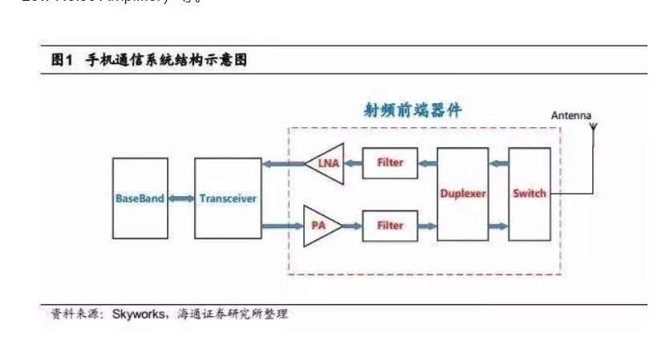

关键词¶
PA,滤波器,双工器,低噪声放大器,天线开关,transceiver
图片¶
如图片,手机通信的构造图
发送端:cpu,transceiver,PA,Filter,Duplexer,Switch,天线
接收端:天线,switch,双工器,滤波器,LNA,transciver,baseband

名词解析¶
RFFEM,Radio Frequency Front End Module,射频前端模块
PA,Power Amplifier,功率放大器
PA,决定了,手机天线通信,距离,信号质量,待机时间
Switch,天线开关
手机天线开关的作用是切换天线工作状态的开关,天线开关切换的是频段以及接收、发射状态
Fileter,滤波器
RF滤波器包括SAW(声表面滤波器),BAW(体声波滤波器)等
Duplexer,双工器
双工器包含TX,RX的滤波器
LNA,Low Noise Amplifer,低噪声放大器
噪声系数很低的放大器,一般用作各类无线电接收机的高频或中频前置放大器，以及高灵敏度电子探测设备的放大电路
transceiver
即收发器芯片，是一种集成了收发功能的芯片。它能够将数字信号转换为模拟信号并进行发送，同时可以将接收到的模拟信号转换为数字信号